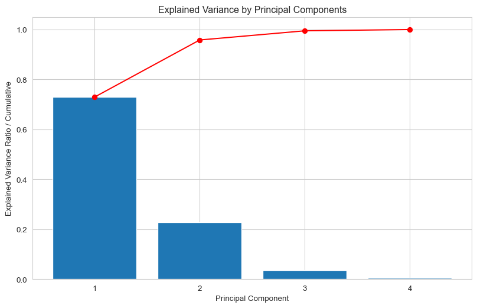
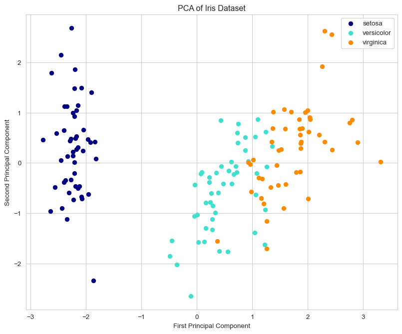
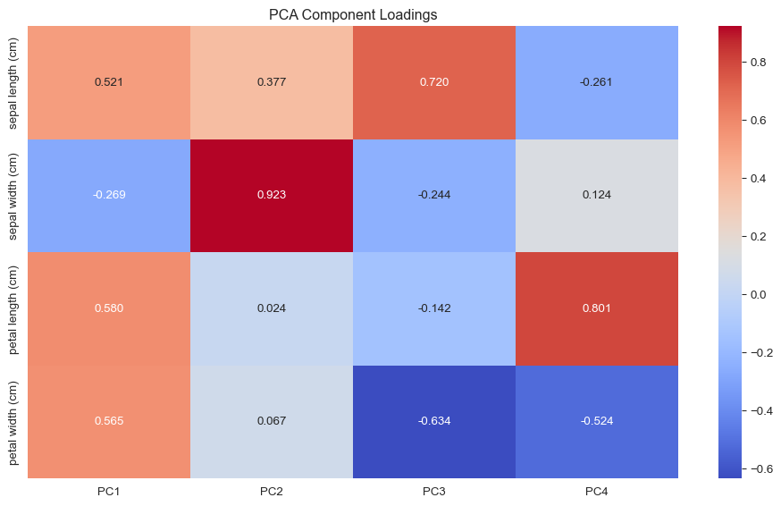
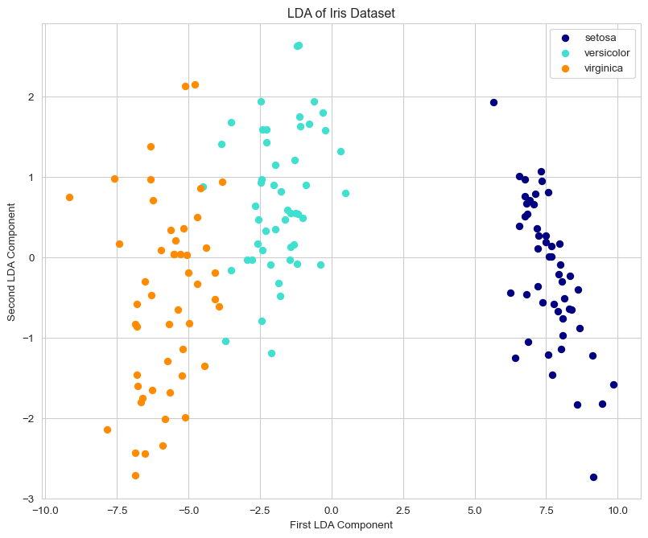
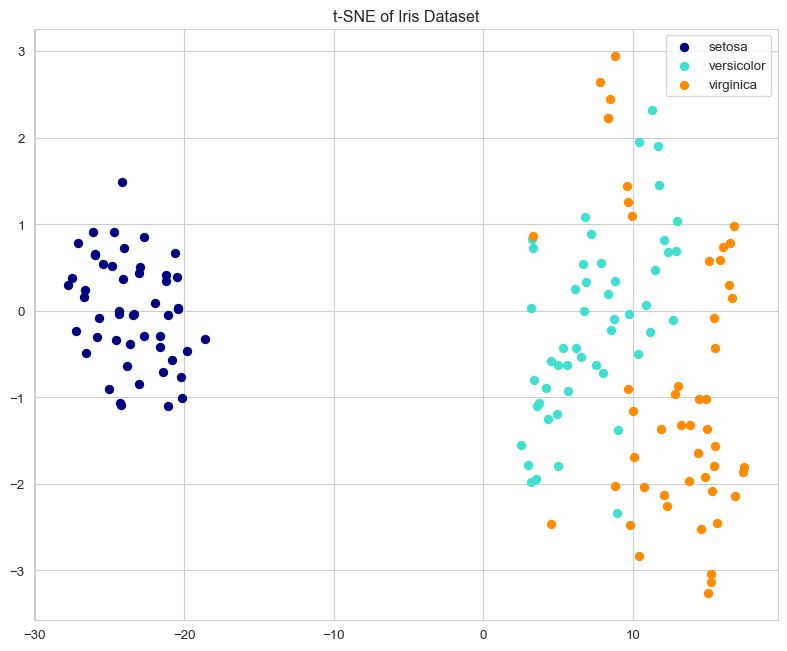
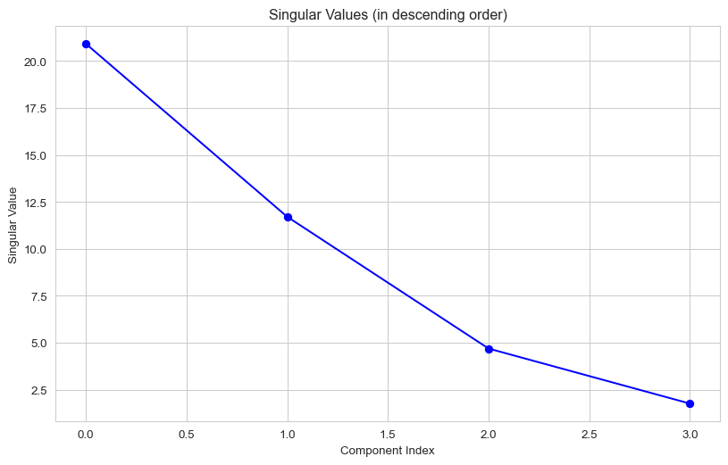
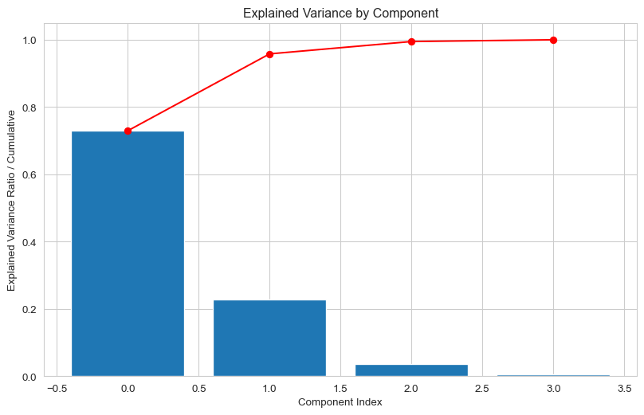
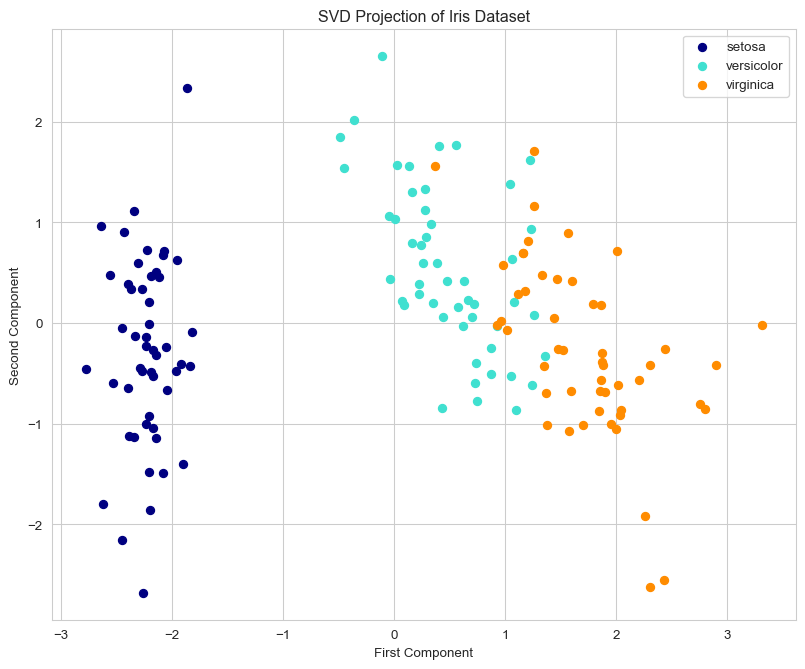

Dimensionality reduction is a critical technique in data analysis and machine learning that reduces the number of input variables (features) while preserving essential information. High-dimensional datasets often contain redundancy or noise that can be eliminated through these methods.
import numpy as npimport pandas as pdimport matplotlib.pyplot as pltimport seaborn as snsfrom sklearn.datasets import load_iris, fetch_openmlfrom sklearn.preprocessing import StandardScalerfrom sklearn.decomposition import PCA, KernelPCA, IncrementalPCAfrom sklearn.discriminant_analysis import LinearDiscriminantAnalysisfrom sklearn.manifold import TSNEimport plotly.express as px# Set plotting stylessns.set_style("whitegrid")plt.rcParams['figure.figsize'] = (10, 6)
Figure 6.1
6.1 Why Reduce Dimensionality?
The primary goals of dimensionality reduction include:
Reducing overfitting by eliminating noise and redundant features
Improving computational efficiency for faster, less expensive algorithms
Enabling data visualization by mapping to 2D or 3D spaces
Removing noise to focus on meaningful patterns
6.2 Dataset Example: Iris
Let’s load and examine the Iris dataset, which we’ll use throughout this document:
# Load the Iris datasetiris = load_iris()X = iris.datay = iris.targetfeature_names = iris.feature_namestarget_names = iris.target_names# Create a DataFrame for easier manipulationiris_df = pd.DataFrame(X, columns=feature_names)iris_df['species'] = [target_names[i] for i in y]# Display dataset informationprint(f"Dataset shape: {X.shape}")print(f"Features: {feature_names}")print(f"Number of samples per class: {np.bincount(y)}")# Preview the datasetiris_df.head()
Dataset shape: (150, 4)
Features: ['sepal length (cm)', 'sepal width (cm)', 'petal length (cm)', 'petal width (cm)']
Number of samples per class: [50 50 50]
sepal length (cm)
sepal width (cm)
petal length (cm)
petal width (cm)
species
0
5.1
3.5
1.4
0.2
setosa
1
4.9
3.0
1.4
0.2
setosa
2
4.7
3.2
1.3
0.2
setosa
3
4.6
3.1
1.5
0.2
setosa
4
5.0
3.6
1.4
0.2
setosa
6.3 Approaches to Dimensionality Reduction
Dimensionality reduction methods fall into two main categories:
6.3.1 Unsupervised Methods
These techniques don’t require labeled data and find lower-dimensional representations based solely on the intrinsic structure of features.
6.3.1.1 Principal Component Analysis (PCA)
PCA identifies directions (principal components) where data varies the most and projects data onto this lower-dimensional space.
# Standardize the datascaler = StandardScaler()X_scaled = scaler.fit_transform(X)# Apply PCApca = PCA()X_pca = pca.fit_transform(X_scaled)# Plot explained varianceplt.figure(figsize=(10, 6))plt.bar(range(1, len(pca.explained_variance_ratio_) +1), pca.explained_variance_ratio_)plt.plot(range(1, len(pca.explained_variance_ratio_) +1), np.cumsum(pca.explained_variance_ratio_), 'r-o')plt.xlabel('Principal Component')plt.ylabel('Explained Variance Ratio / Cumulative')plt.xticks(range(1, len(pca.explained_variance_ratio_) +1))plt.title('Explained Variance by Principal Components')plt.grid(True)plt.show()# Print variance explainedprint(f"Variance explained by each component: {pca.explained_variance_ratio_}")print(f"Cumulative variance explained: {np.cumsum(pca.explained_variance_ratio_)}")# Visualization in 2Dplt.figure(figsize=(10, 8))colors = ['navy', 'turquoise', 'darkorange']for i, c, label inzip(range(3), colors, target_names): plt.scatter(X_pca[y == i, 0], X_pca[y == i, 1], c=c, label=label)plt.xlabel('First Principal Component')plt.ylabel('Second Principal Component')plt.title('PCA of Iris Dataset')plt.legend()plt.grid(True)plt.show()
Variance explained by each component: [0.72962445 0.22850762 0.03668922 0.00517871]
Cumulative variance explained: [0.72962445 0.95813207 0.99482129 1. ]

(a) PCA visualization of the Iris dataset

(b)
Figure 6.2
6.3.1.1.1 Key Concepts of PCA
Variance Maximization: Captures directions with maximum variance
Linear Combinations: Each PC is a weighted sum of original features
Uncorrelated Components: PCs are orthogonal to each other
Coordinate Transformation: Rotates data into a new coordinate system
Let’s explore the relationship between original features and principal components:
# Display the component loadingsloadings = pd.DataFrame( pca.components_.T, columns=[f'PC{i+1}'for i inrange(pca.components_.shape[0])], index=feature_names)# Visualize the loadingsplt.figure(figsize=(10, 6))sns.heatmap(loadings, annot=True, cmap='coolwarm', fmt='.3f')plt.title('PCA Component Loadings')plt.tight_layout()plt.show()# Determine optimal number of components for 95% variancecumsum = np.cumsum(pca.explained_variance_ratio_)d = np.argmax(cumsum >=0.95) +1print(f"Number of components needed for 95% variance: {d}")

Figure 6.3: PCA components and their relationship to original features
Number of components needed for 95% variance: 2
6.3.1.2 Other Unsupervised Methods
Independent Component Analysis (ICA): Focuses on statistical independence of components
Non-negative Matrix Factorization (NMF): Factorizes data into non-negative matrices
6.3.2 Supervised Methods
These techniques consider class labels during dimensionality reduction to better preserve class separability.
6.3.2.1 Linear Discriminant Analysis (LDA)
LDA maximizes class separation by projecting data onto a lower-dimensional space:
# Apply LDAlda = LinearDiscriminantAnalysis(n_components=2)X_lda = lda.fit_transform(X_scaled, y)# Visualization in 2Dplt.figure(figsize=(10, 8))for i, c, label inzip(range(3), colors, target_names): plt.scatter(X_lda[y == i, 0], X_lda[y == i, 1], c=c, label=label)plt.xlabel('First LDA Component')plt.ylabel('Second LDA Component')plt.title('LDA of Iris Dataset')plt.legend()plt.grid(True)plt.show()# Check explained variance ratioprint(f"Explained variance ratio: {lda.explained_variance_ratio_}")

Figure 6.4: LDA visualization of the Iris dataset
Explained variance ratio: [0.9912126 0.0087874]
6.4 Advanced PCA Implementations
6.4.1 Kernel PCA
When data is not linearly separable, Kernel PCA can be more effective:
t-SNE is particularly effective for visualizing high-dimensional data:
# Apply t-SNEtsne = TSNE(n_components=2, random_state=42)X_tsne = tsne.fit_transform(X_scaled)# Create visualizationplt.figure(figsize=(10, 8))for i, c, label inzip(range(3), colors, target_names): plt.scatter(X_tsne[y == i, 0], X_tsne[y == i, 1], c=c, label=label)plt.title('t-SNE of Iris Dataset')plt.legend()plt.grid(True)plt.show()

Figure 6.7: t-SNE visualization of the Iris dataset
6.6 Real-World Application: MNIST Dataset
Let’s apply dimensionality reduction to a larger, more complex dataset:
# Load a subset of MNIST for demonstrationmnist = fetch_openml('mnist_784', version=1, as_frame=False, parser='auto')X_mnist = mnist.data[:2000]y_mnist = mnist.target[:2000].astype(int)# Standardize the datascaler = StandardScaler()X_mnist_scaled = scaler.fit_transform(X_mnist)# Apply PCApca_mnist = PCA(n_components=50) # Reduce from 784 to 50 dimensionsX_mnist_pca = pca_mnist.fit_transform(X_mnist_scaled)# Plot explained varianceplt.figure(figsize=(10, 6))plt.plot(np.cumsum(pca_mnist.explained_variance_ratio_))plt.xlabel('Number of Components')plt.ylabel('Cumulative Explained Variance')plt.title('Explained Variance vs. Number of PCA Components (MNIST)')plt.grid(True)plt.show()# Check how many components needed for 95% variancecumsum = np.cumsum(pca_mnist.explained_variance_ratio_)d = np.argmax(cumsum >=0.95) +1print(f"Number of components needed for 95% variance: {d}")# Visualize first two componentsplt.figure(figsize=(10, 8))for i inrange(10): plt.scatter(X_mnist_pca[y_mnist == i, 0], X_mnist_pca[y_mnist == i, 1], label=str(i), alpha=0.6)plt.legend()plt.title('PCA of MNIST Dataset (First 2 Components)')plt.grid(True)plt.show()# Visualize some original vs. reconstructed imagesn_row, n_col =2, 5fig, axes = plt.subplots(n_row, n_col, figsize=(15, 6))# Reconstruct images from PCA componentsX_mnist_reconstructed = pca_mnist.inverse_transform(X_mnist_pca)X_mnist_reconstructed = scaler.inverse_transform(X_mnist_reconstructed)for i inrange(n_row):for j inrange(n_col): idx = i * n_col + jif i ==0: axes[i, j].imshow(X_mnist[idx].reshape(28, 28), cmap='gray') axes[i, j].set_title(f"Original: {y_mnist[idx]}")else: axes[i, j].imshow(X_mnist_reconstructed[idx].reshape(28, 28), cmap='gray') axes[i, j].set_title(f"Reconstructed: {y_mnist[idx]}") axes[i, j].axis('off')plt.tight_layout()plt.show()
Figure 6.8
6.7 Interactive 3D Visualization with Plotly
Plotly enables interactive exploration of dimensionality reduction results:
# Apply PCA with 3 componentspca_3d = PCA(n_components=3)components = pca_3d.fit_transform(X_scaled)# Create a DataFrame for plottingdf = pd.DataFrame({'PC1': components[:, 0],'PC2': components[:, 1],'PC3': components[:, 2],'Species': [target_names[i] for i in y]})# Create 3D scatter plotfig = px.scatter_3d( df, x='PC1', y='PC2', z='PC3', color='Species', title='3D PCA of Iris Dataset', labels={'PC1': 'Principal Component 1', 'PC2': 'Principal Component 2','PC3': 'Principal Component 3'})fig.update_layout( legend_title_text='Species', scene=dict( xaxis_title='PC1', yaxis_title='PC2', zaxis_title='PC3' ))fig.show()
(a) 3D PCA visualization of the Iris dataset
(b)
Figure 6.9
6.8 Choosing the Right Dimensionality Reduction Technique
Technique
Strengths
Weaknesses
Best For
PCA
Fast, easy to interpret
Linear transformations only
Large datasets, initial exploration
Kernel PCA
Handles nonlinear relationships
More parameters to tune
Complex, nonlinear data
LDA
Maximizes class separation
Requires labeled data
Classification tasks
t-SNE
Excellent for visualization
Slow on large datasets
Visualizing high-dimensional data
UMAP
Preserves local and global structure
Complex implementation
Alternative to t-SNE for larger datasets
6.9 Singular Value Decomposition (SVD)
Singular Value Decomposition (SVD) is a powerful linear algebra technique that decomposes a matrix into three component matrices, revealing the underlying structure of the data. SVD forms the mathematical foundation for many dimensionality reduction techniques, including PCA.
import numpy as npimport pandas as pdimport matplotlib.pyplot as pltimport seaborn as snsfrom sklearn.datasets import load_irisfrom scipy.linalg import svdfrom sklearn.preprocessing import StandardScalerfrom PIL import Image
Figure 6.10
6.9.1 Mathematical Foundation
SVD decomposes a matrix \(A\) (of size \(m \times n\)) into three matrices:
\[A = U\Sigma V^T\]
Where: - \(U\) is an \(m \times m\) orthogonal matrix containing the left singular vectors - \(\Sigma\) is an \(m \times n\) diagonal matrix containing the singular values - \(V^T\) is the transpose of an \(n \times n\) orthogonal matrix containing the right singular vectors
The singular values in \(\Sigma\) are ordered in descending order, with the largest values representing the most important dimensions of the data.
6.9.2 Basic SVD Example
Let’s implement SVD on the Iris dataset to understand its mechanics:
# Load and scale the Iris datasetiris = load_iris()X = iris.datay = iris.targetfeature_names = iris.feature_names# Standardize the datascaler = StandardScaler()X_scaled = scaler.fit_transform(X)# Apply SVDU, sigma, Vt = svd(X_scaled)# Print dimensions of decomposed matricesprint(f"Original matrix shape: {X_scaled.shape}")print(f"U matrix shape: {U.shape}")print(f"Sigma shape: {sigma.shape}")print(f"V^T matrix shape: {Vt.shape}")# Plot the singular valuesplt.figure(figsize=(10, 6))plt.plot(sigma, 'bo-')plt.xlabel('Component Index')plt.ylabel('Singular Value')plt.title('Singular Values (in descending order)')plt.grid(True)plt.show()# Calculate and plot the explained variance ratioexplained_variance = (sigma **2) / (len(X_scaled) -1)total_var = explained_variance.sum()explained_variance_ratio = explained_variance / total_varplt.figure(figsize=(10, 6))plt.bar(range(len(explained_variance_ratio)), explained_variance_ratio)plt.plot(range(len(explained_variance_ratio)), np.cumsum(explained_variance_ratio), 'r-o')plt.xlabel('Component Index')plt.ylabel('Explained Variance Ratio / Cumulative')plt.title('Explained Variance by Component')plt.grid(True)plt.show()
Original matrix shape: (150, 4)
U matrix shape: (150, 150)
Sigma shape: (4,)
V^T matrix shape: (4, 4)

(a) SVD applied to the Iris dataset

(b)
Figure 6.11
6.9.3 Relationship Between SVD and PCA
PCA can be implemented using SVD, which is often more numerically stable. The principal components in PCA are equivalent to the right singular vectors in SVD.
# Project data onto first two singular vectors (equivalent to first two PCs)svd_projection = X_scaled @ Vt.T[:, :2]# Visualize the projectionplt.figure(figsize=(10, 8))colors = ['navy', 'turquoise', 'darkorange']target_names = iris.target_namesfor i, c, label inzip(range(3), colors, target_names): plt.scatter(svd_projection[y == i, 0], svd_projection[y == i, 1], c=c, label=label)plt.xlabel('First Component')plt.ylabel('Second Component')plt.title('SVD Projection of Iris Dataset')plt.legend()plt.grid(True)plt.show()# Compare first two singular values with corresponding eigenvectorsprint(f"First two singular values: {sigma[:2]}")print(f"First two singular values squared: {sigma[:2]**2}")

Figure 6.12: Comparison of SVD and PCA projections
First two singular values: [20.92306556 11.7091661 ]
First two singular values squared: [437.77467248 137.10457072]
6.9.4 Low-Rank Approximation
One of the key applications of SVD is low-rank matrix approximation, which enables data compression:
# Create a simple matrix for demonstrationA = np.array([ [1, 2, 3, 4, 5], [6, 7, 8, 9, 10], [11, 12, 13, 14, 15]])# Apply SVDU, sigma, Vt = svd(A)# Create diagonal matrix SigmaSigma = np.zeros((A.shape[0], A.shape[1]))for i inrange(min(A.shape)): Sigma[i, i] = sigma[i]# Function to reconstruct with k componentsdef reconstruct_svd(u, sigma, vt, k):# Create truncated sigma matrix sigma_k = np.zeros((u.shape[0], vt.shape[0]))for i inrange(min(k, len(sigma))): sigma_k[i, i] = sigma[i]# Reconstructreturn u @ sigma_k @ vt# Reconstruct with different ranksranks = [1, 2, 3]fig, axes = plt.subplots(1, len(ranks) +1, figsize=(15, 4))# Original matrixaxes[0].imshow(A, cmap='viridis')axes[0].set_title('Original Matrix')axes[0].axis('off')# Reconstructionsfor i, k inenumerate(ranks): A_k = reconstruct_svd(U, sigma, Vt, k) axes[i+1].imshow(A_k, cmap='viridis') axes[i+1].set_title(f'Rank {k} Approximation') axes[i+1].axis('off')plt.tight_layout()plt.show()# Calculate and display approximation errorsfor k in ranks: A_k = reconstruct_svd(U, sigma, Vt, k) error = np.linalg.norm(A - A_k, 'fro')print(f"Rank {k} approximation error: {error:.4f}")
A common application of SVD is image compression. Let’s demonstrate this with a grayscale image:
# Load a sample image# For demonstration, let's create a simple gradient imageimg_size =512img = np.zeros((img_size, img_size))for i inrange(img_size):for j inrange(img_size): img[i, j] = (i + j) / (2* img_size)# Apply SVDU, sigma, Vt = svd(img, full_matrices=False)# Compress image with different numbers of singular valuesk_values = [5, 20, 50, 100]fig, axes = plt.subplots(1, len(k_values) +1, figsize=(18, 4))# Original imageaxes[0].imshow(img, cmap='gray')axes[0].set_title('Original Image')axes[0].axis('off')# Compressed imagesfor i, k inenumerate(k_values):# Reconstruct image with k singular values compressed_img = U[:, :k] @ np.diag(sigma[:k]) @ Vt[:k, :]# Display axes[i+1].imshow(compressed_img, cmap='gray') axes[i+1].set_title(f'k={k}, CR={img.size/(k*(img.shape[0] + img.shape[1] +1)):.1f}') axes[i+1].axis('off')# Print compression ratio original_size = img.size *8# Assuming 8 bits per pixel compressed_size = k * (img.shape[0] + img.shape[1] +1) *8# k(m+n+1) values stored compression_ratio = original_size / compressed_sizeprint(f"k={k}, Compression ratio: {compression_ratio:.2f}")plt.tight_layout()plt.show()
Figure 6.14
6.9.6 Applications of SVD
SVD has numerous applications across various domains:
6.9.6.1 1. Recommendation Systems
# Create a user-item ratings matrix (movies example)# Rows: users, Columns: movies, Values: ratingsratings = np.array([ [5, 4, 0, 0, 1], [4, 0, 0, 3, 1], [1, 1, 0, 5, 0], [0, 0, 4, 0, 3], [2, 0, 5, 0, 0]])# Apply SVDU, sigma, Vt = svd(ratings)# Use a low-rank approximation (k=2)k =2ratings_approx = U[:, :k] @ np.diag(sigma[:k]) @ Vt[:k, :]# Fill in missing ratingsprint("Original ratings matrix:")print(ratings)print("\nReconstructed ratings matrix:")print(np.round(ratings_approx, 1))# Find recommendations for a useruser_id =0missing_ratings = np.where(ratings[user_id] ==0)[0]recommendations = [(item, ratings_approx[user_id, item]) for item in missing_ratings]recommendations.sort(key=lambda x: x[1], reverse=True)print(f"\nTop recommendations for User {user_id}:")for item, score in recommendations:print(f"Item {item}: Predicted rating {score:.1f}")
Figure 6.15
6.9.6.2 2. Latent Semantic Analysis (LSA) for Text Mining
from sklearn.feature_extraction.text import TfidfVectorizerfrom sklearn.decomposition import TruncatedSVD# Sample documentsdocuments = ["Machine learning is a field of artificial intelligence","Deep learning is a subset of machine learning","Neural networks are used in deep learning","SVD is used for dimensionality reduction","PCA and SVD are related techniques","Dimensionality reduction helps with visualizing data"]# Create TF-IDF matrixvectorizer = TfidfVectorizer(stop_words='english')X = vectorizer.fit_transform(documents)# Get feature namesfeature_names = vectorizer.get_feature_names_out()# Print the document-term matrixprint("Document-Term Matrix (TF-IDF):")df = pd.DataFrame(X.toarray(), columns=feature_names)print(df)# Apply LSA (truncated SVD)n_components =2lsa = TruncatedSVD(n_components=n_components)X_lsa = lsa.fit_transform(X)# Print explained varianceprint(f"\nExplained variance ratio: {lsa.explained_variance_ratio_}")print(f"Total explained variance: {sum(lsa.explained_variance_ratio_):.2f}")# Plot documents in the reduced spaceplt.figure(figsize=(10, 8))plt.scatter(X_lsa[:, 0], X_lsa[:, 1], alpha=0.8)# Label each pointfor i, doc inenumerate(documents): plt.annotate(f"Doc {i+1}", (X_lsa[i, 0], X_lsa[i, 1]), xytext=(5, 5), textcoords='offset points')plt.xlabel("Component 1")plt.ylabel("Component 2")plt.title("Documents in LSA Space")plt.grid(True)plt.show()# Examine term weights in componentscomponent_terms = {}for i, component inenumerate(lsa.components_):# Get the top terms for this component terms =zip(feature_names, component) sorted_terms =sorted(terms, key=lambda x: abs(x[1]), reverse=True)[:5] component_terms[f"Component {i+1}"] = sorted_terms# Display top terms for each componentfor component, terms in component_terms.items():print(f"\n{component} top terms:")for term, weight in terms:print(f" {term}: {weight:.3f}")
Figure 6.16
6.9.7 Truncated SVD vs. PCA
Truncated SVD can be applied directly to sparse matrices, while PCA typically requires dense matrices. This makes Truncated SVD particularly useful for text analysis and high-dimensional sparse data:
Robust mathematical foundation: Based on well-established linear algebra principles
Numerical stability: Often more stable than eigendecomposition-based methods
Applicability to non-square matrices: Can be applied to any rectangular matrix
Optimal low-rank approximation: Provides the best approximation in terms of Frobenius norm
6.10.0.2 Limitations
Computational cost: Full SVD is expensive for large matrices (O(min(mn², m²n)))
Memory requirements: Working with large matrices can be memory-intensive
Interpretability: The resulting components may be difficult to interpret in some domains
Linearity: As with PCA, SVD assumes linear relationships in the data
6.11 Conclusion
Dimensionality reduction techniques are essential tools in the data scientist’s toolkit, enabling:
More efficient model training
Better visualization of complex datasets
Improved performance through noise reduction
Insights into feature importance and relationships
As with all techniques, the choice of dimensionality reduction method should be guided by:
The specific characteristics of your dataset
Your analysis goals
Computational constraints
Whether you need interpretable results
Singular Value Decomposition is a fundamental technique in linear algebra with powerful applications in dimensionality reduction, data compression, noise filtering, and recommendation systems. Its ability to decompose any matrix into meaningful components makes it an essential tool for data scientists and machine learning practitioners.
By understanding the mathematical principles behind SVD and its relationship to other dimensionality reduction techniques like PCA, we can effectively apply it to solve complex problems across various domains.
In practice, the choice between full SVD, truncated SVD, or randomized algorithms depends on the specific characteristics of the data and computational constraints. Modern implementations in libraries like SciPy and scikit-learn provide efficient algorithms that make SVD accessible for large-scale applications.
The Python implementations demonstrated in this document provide a starting point for applying these techniques to your own data analysis and machine learning projects.
6.12 References
Jolliffe, I. T., & Cadima, J. (2016). Principal component analysis: a review and recent developments. Philosophical Transactions of the Royal Society A, 374(2065).
Van der Maaten, L., & Hinton, G. (2008). Visualizing data using t-SNE. Journal of Machine Learning Research, 9(11).
Pedregosa, F., et al. (2011). Scikit-learn: Machine Learning in Python. Journal of Machine Learning Research, 12, 2825-2830.